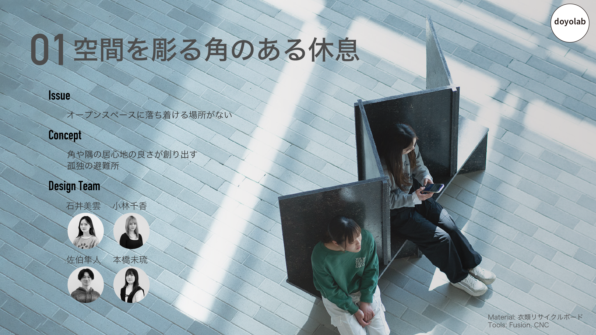
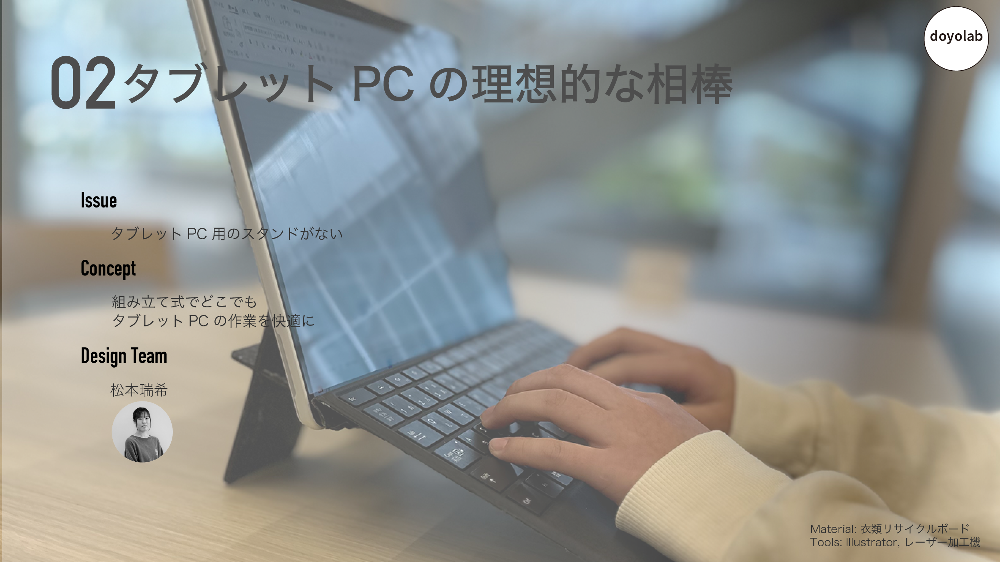
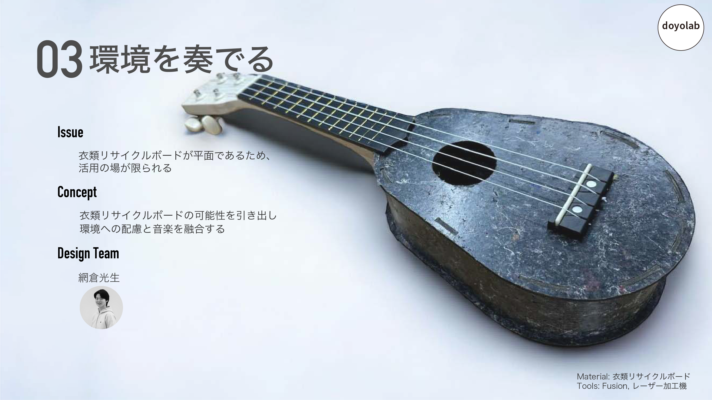

春休みサーキュラーデザインプロジェクト
リサイクルは、［原材料→製品→利用→廃棄物］という線形経済の中で一部を再資源化するものですが、最終的には廃棄物を生んでしまいます。
サーキュラーエコノミーとは、製品を利用した後、廃棄物を出さずに全てを再資源化し、少しの原材料のみを追加して循環させ続け持続可能な社会を目指す新たな経済システムです。
一般社団法人繊維育英会が運営するプロジェクト「Withal（ウィゾール）」は、着なくなった衣服を回収して糸やボード、ダンボール、コークス燃料などに再生しています。
私たちは、着なくなった衣服から再生される圧縮成形された繊維リサイクルボードを使用して、サーキュラーデザインを行いました。



すべての服は捨てるものでは無く、すべて回収するもの。そして、生まれ変わるもの。 – 一般社団法人 繊維育英会
4月15日からは、神奈川大学みなとみらいキャンパスで、学生や地域住民を対象にしたサーキュラーエコノミー実践の機会を増やすための「re・e・bornプロジェクト」を実施しました。
5月10日 一般社団法人繊維育英会とセッション
5月24日 イリノイ大学の学生に発表・交流